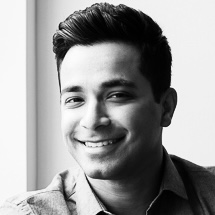

Hudson River Companies LLC is a Real estate acquisition and investment firm focused on opportunistic mixed use and industrial asset class

Saral Gupta founded Hudson River Companies in 2018 to take an entrepreneurial and creative approach to value-add, opportunistic real estate acquisitions and investing. Prior to founding HRC, Saral worked at General Motors asset Management, in the alternative investments group and at BNY Mellon as an AVP. Saral has an undergraduate degree in Finance from Rutgers Business School and a M.S. in Real Estate Development & Finance from New York University.